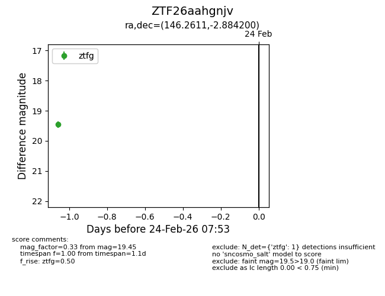
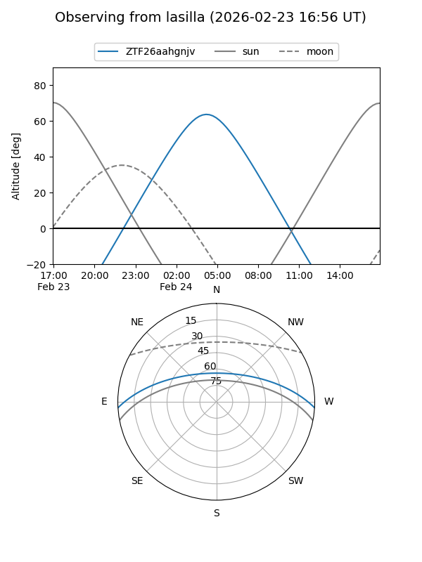
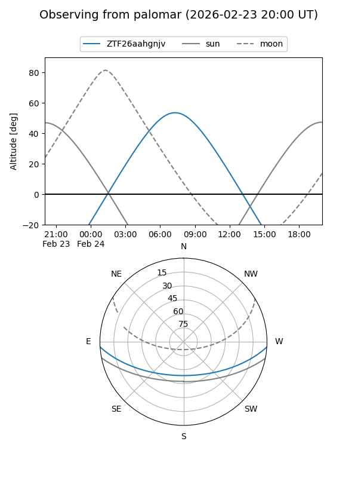

ZTF26aahgnjv
Target ZTF26aahgnjv at 2026-02-24 09:08
Aliases and brokers:
FINK: link
Lasair: link
ALeRCE: link
alt names
ZTF26aahgnjv (ztf,fink_ztf)
Coordinates:
equatorial (ra, dec) = 146.2611,-2.88420
equatorial (HMS+DMS) = 09:45:02.67,-02:53:03.12
galactic (l, b) = (239.1725,+36.00102)
Flags:
Photometry:
last ztfg=19.45
1 ztfg detections
Lightcurve

Visibility


Additional plots